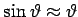

Integrale der Form (8.20a,b), mit dem Integranden , lassen sich, abgesehen von Ausnahmefällen, nicht in geschlossener Form integrieren, wenn P(x) ein Polynom dritten oder vierten Grades ist, sondern sind als elliptische Integrale numerisch zu berechnen. Die Umkehrfunktionen der elliptischen Integrale sind die elliptischen Funktionen. Sie sind den trigonometrischen Funktionen ähnlich und können als deren Verallgemeinerung angesehen werden. Um das am speziellen Fall zu zeigen, wird
gesetzt und beachtet, daß
| (14.99) |
besteht und daß
| Beispiel |
|
Die Schwingungsdauer des mathematischen Pendels mit der an einem masselosen nicht dehnbaren Faden der Länge l befestigten Masse m (s. Abbildung) kann mit Hilfe einer nichtlinearen Differentialgleichung 2. Ordnung, die sich als Bewegungsgleichung aus dem Gleichgewicht der an der Masse angreifenden Kräfte ergibt, berechnet werden: |
| (14.100a) |
Zwischen Pendellänge l und Auslenkung s aus der Ruhelage besteht der Zusammenhang , also und . Die an der Masse angreifende Kraft , wobei g die Fallbeschleunigung ist, spaltet, bezogen auf die Bahnkurve, in eine Normalkomponente FN und eine Tangentialkomponente FT auf (s. obige Abbildung). Die Normalkomponente wird von der Fadenspannung im Gleichgewicht gehalten. Da sie senkrecht auf der Bewegungsrichtung steht, liefert sie keinen Beitrag zur Bewegungsgleichung. Die Tangentialkomponente FT steht mit der entgegengesetzt gleich großen Tangentialkraft im Gleichgewicht: . Die Tangentialkomponente zeigt immer zur Ruhelage hin.
Durch Trennung der Variablen erhält man die Pendelgleichung
Dabei bedeutet t0 die Zeit, bei der das Pendel zum ersten Mal durch die tiefste Lage geht, d.h., es gilt . Mit  ist die Integrationsvariable bezeichnet. Aus (14.100b) erhält man nach einigen Umformungen mit Hilfe der Substitution
ist die Integrationsvariable bezeichnet. Aus (14.100b) erhält man nach einigen Umformungen mit Hilfe der Substitution
die Gleichung
Dabei ist ein elliptisches Integral 1. Gattung. Der Ausschlagwinkel ist eine periodische Funktion der Periode 2T mit
| (14.100e) |
wobei K ein vollständiges elliptisches Integral 1. Gattung darstellt (s. auch Tabelle). Mit T ist die Schwingungsdauer des Pendels bezeichnet, d.h. die Zeit zwischen zwei Umkehrpunkten, für die gilt. Für kleine Auslenkungen mit  wird .